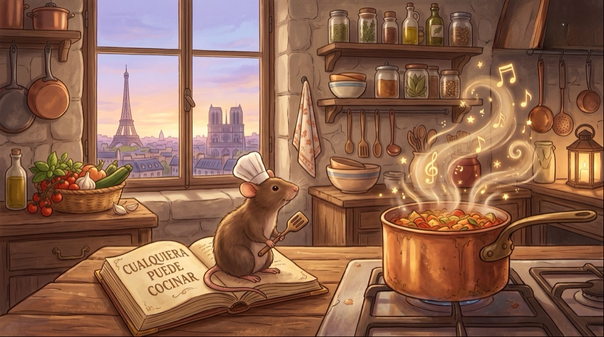

Little Chef
"Cualquiera puede codificar"
Un framework CSS ligero, modular y altamente personalizable inspirado en la alta cocina parisina. Diseñado para que construyas interfaces con la misma pasión y orden con la que un chef crea sus platillos.
